EE 306 : Random Process Examples
Two of the examples given in the lectures are studied with MATLAB.
Contents
Example 1: Constant Amplitude, Random Phase Cosine
The random process x(t) is defined as follows:
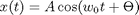
Here $\Theta$ is the only random variable which is uniformly distributed in $[0,2\pi)$.
To generate this process, we do the following:
% Set frequency and time vector w0 = 2*pi*1/3; %frequency is 1/3 Hz t = 0:1/10:10; %time runs from 0 to 10 seconds with 0.1 sec. increments %%Generate a few realizations and show them for k=1:8, Th=2*pi*rand(1); plot(t,cos(w0*t+Th)), hold all; end; hold off; grid on; axis([0 10 -2 2]) title(['Realizations of the process x(t)' char(10) ... '(Example 1: Random Phase Constant Envolope Cosine']); xlabel('t (sec.)'); ylabel('Volt');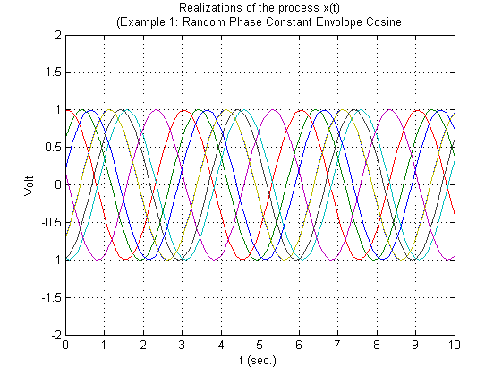
Now let's collect some statistics about this process
%-------- % First order pdf description %-------- t1 = 0.5; %arbitrarily selected as 0.5 MCnum = 10e3; %Monte Carlo number xt1 = zeros(1,MCnum); for k=1:MCnum, xt1(k)=cos(w0*t1+2*pi*rand(1)); %xt1(k) is the value of k'th realization at t=t1 end; % This way of generating xt1 vector is OK, but it is a poor Matlab practice. % Avoid using for loop as much as you can! (For loops are slow!)
Instead we could have written the following:
t1 = 0.5; %arbitrarily selected as 0.5 MCnum = 10e3; %Monte Carlo Number xt1=cos(w0*t1+2*pi*rand(1,MCnum));
%Lets generate the histogram of collected data hist(xt1,100), grid on; %shows the histogram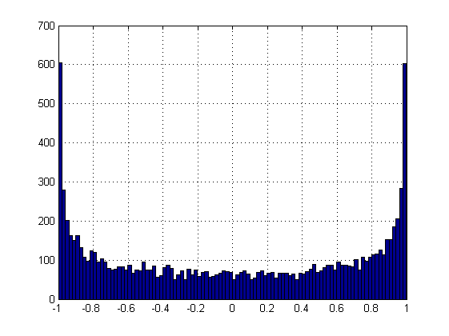
%Lets try to superpose the analytical result calculated in the lecture %on the histogram
1st order pdf derived in the lecture:
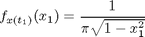
[N,X]= hist(xt1,100); %Do not show the histogram bar(X,N/MCnum); grid on; hold all; %Normalize to compare with pdf and show DeltaX = X(2)-X(1); %This is width of each bin in the histogram myfunc = inline('1/pi./sqrt(1-x1.^2)'); %Analytical result plot(X,myfunc(X)*DeltaX,'r','linewidth',3); hold off; legend('Histogram','Analytical Result From Lectures'); title(['Example 1 : Statistics for x_1 = x(' num2str(t1) ')']); xlabel('x_1');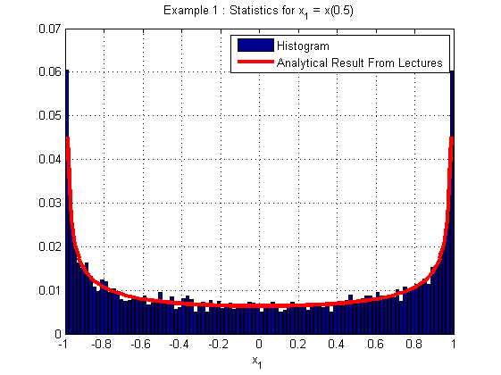
% We have a very good fit! Theory works :) %
Let's repeat the same test for another time instant
t1 = 1.92; %Time instant is changed xt1=cos(w0*t1+2*pi*rand(1,MCnum)); [N,X]= hist(xt1,100); bar(X,N/MCnum); grid on; hold all; DeltaX = X(2)-X(1); %This is width of each bin in the histogram myfunc = inline('1/pi./sqrt(1-theta.^2)'); plot(X,myfunc(X)*DeltaX,'r','linewidth',3); hold off; legend('Histogram','Analytical Result From Lectures'); title(['Example 1 : Statistics for x_1 = x(' num2str(t1) ')']); xlabel('x_1');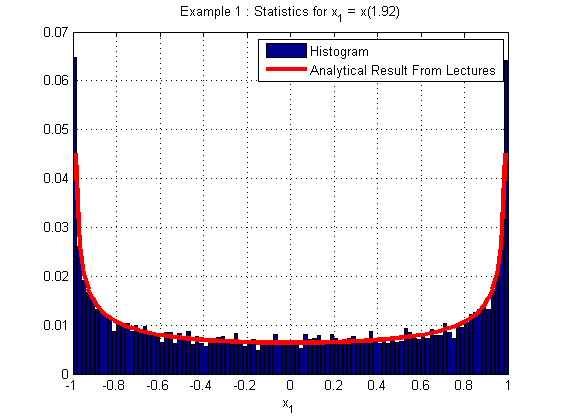
% The histogram seems to be unchanged! % % (This should be the case, since this process is 1st order stationary) %
%------- % Second order pdf description %------ MCnum=40e3; t1 = 0.5; t2 = 0.57; %Select two time instants xt12=cos(w0*repmat([t1 t2],MCnum,1)+2*pi*repmat(rand(MCnum,1),1,2)); hist3(xt12,[50 50]); %draw joint histogram view(-19,26); %set view angle xlabel('x_1=x(t_1)'); ylabel('x_2=x(t_2)'); title('Histogram for joint distribution of x_1 and x_2')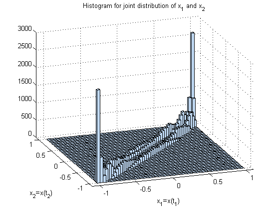
% You can rotate this distribution with the % rotation tool (on the toolbar of MATLAB figure) % % % Note that the joint pdf contains two ridges connecting (-1,-1) and (1,1) % points. It is as if there are two layers of walls (extra safe chinese % walls) separating the square of [-1,1] x [-1,1] into North-West and % South-East parts. %
This is indeed what we expect since, the first observation,
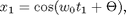
gives us two possible solutions for $\Theta$. They are
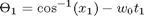
and
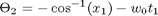
Then
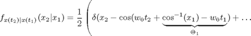
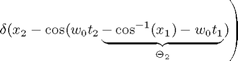
and then the joint density is
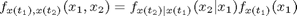
or
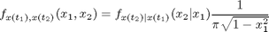
This is what we should see when you look at the double layered chinese wall picture!
Example 2: Binary Transmitter with zero timing offset
The random process x(t) is defined as follows:
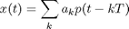
Here $a_k$ is the random variable which is either 1 or -1 with equal probability. Also $a_k$ is independent from $a_l$ when k is not equal l. Hence $a_k$ is i.i.d. Bernoulli distributed.
As usual p(t) is the rectangle pulse of T seconds p(t) = u(t) - u(t-T); (u(t) is the unit step function)
%To generate this process, we do the following: %Set symbol period and time vector T = 1; % T = 1 sec.(each symbol is transmitted for the duration of 1 sec.) t = 0:1/10:9.9; %time runs from 0 to 9.9 seconds with 0.1 sec. increments %a total of 10 symbols are transmitted %%Generate a few realizations and show them for k=1:4, aks=round(rand(1,10))*2-1, p=ones(1,10); out = conv(p,upsample(aks,10)); out=out(1:100); plot(t,out), hold all; end; hold off; grid on; axis([0 10 -2 2]) title(['Realizations of the process x(t)' char(10) ... '(Example 2: Binary Transmitter with no timing offset']); xlabel('t (sec.)'); ylabel('Volt'); %The following is the randomly selected 1 or -1's for 4 realizations:
aks =
1 1 -1 1 1 1 1 -1 1 1
aks =
-1 -1 1 -1 1 -1 -1 1 1 -1
aks =
-1 -1 1 -1 1 -1 1 -1 1 -1
aks =
1 1 -1 1 1 -1 -1 1 1 1
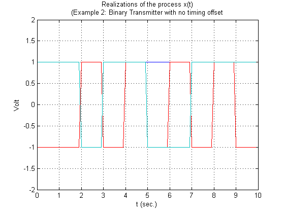 Now let's collect some statistics about this process.
%-------- % First order pdf description %-------- t1 = 0.5; %arbitrarily selected as 0.5 MCnum = 1e3; %Monte Carlo Number xt1=zeros(1,MCnum); for k=1:MCnum, aks=round(rand(1,10))*2-1; out = conv(p,upsample(aks,10)); out=out(1:100); xt1(k)=out(round(t1*10)); end;
%Lets generate the histogram of collected data hist(xt1,100), grid on; %shows the histogram legend('Histogram'); title(['Example 2 : Statistics for x_1 = x(' num2str(t1) ')']); xlabel('x_1');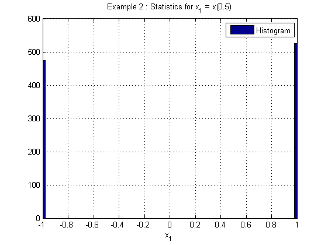
Let's repeat the same test for another time instant
t1 = 3.52; %arbitrarily selected as 0.5 MCnum = 1e3; %Monte Carlo Number xt1=zeros(1,MCnum); for k=1:MCnum, aks=round(rand(1,10))*2-1; out = conv(p,upsample(aks,10)); out=out(1:100); xt1(k)=out(round(t1*10)); end; hist(xt1,100), grid on; legend('Histogram'); title(['Example 2 : Statistics for x_1 = x(' num2str(t1) ')']); xlabel('x_1');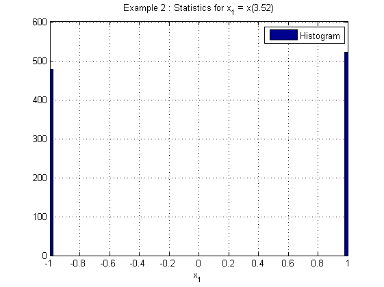
In lectures, we have found the distribution as the two Dirac delta functions located at -1 and 1, which is the case!
%------- % Second order pdf description %------ MCnum=1e3; t1 = 1.9; t2 = 2.2; %Select two time instants xt12=zeros(MCnum,2); for k=1:MCnum, aks=round(rand(1,10))*2-1; out = conv(p,upsample(aks,10)); out=out(1:100); xt12(k,:)=out(round([t1;t2]*10)); end; hist3(xt12,[50 50]); %draw joint histogram view(-19,26); %set view angle xlabel('x_1=x(1.9)'); ylabel('x_2=x(2.2)'); title(['Histogram for joint distribution of x_1 and x_2' char(10) ... '(t_1 and t_2 are NOT in the same symbol interval)'])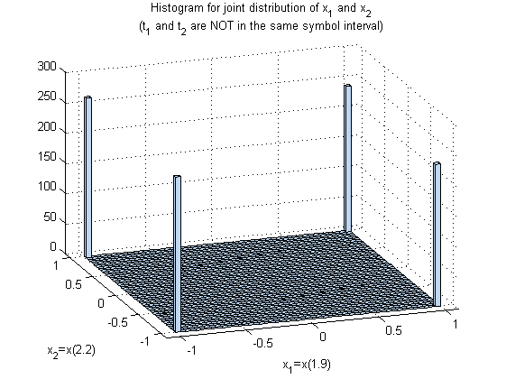
The picture above matches the picture drawn in the lecture for the case of ``far away'' sampling times!
%Let's bring the sampling times closer % MCnum=1e3; t1 = 1.5; t2 = 1.8; %within the same symbol interval xt12=zeros(MCnum,2); for k=1:MCnum, aks=round(rand(1,10))*2-1; out = conv(p,upsample(aks,10)); out=out(1:100); xt12(k,:)=out(round([t1;t2]*10)); end; hist3(xt12,[50 50]); %draw joint histogram view(-19,26); %set view angle xlabel('x_1=x(1.5)'); ylabel('x_2=x(1.8)'); title(['Histogram for joint distribution of x_1 and x_2' char(10) ... '(t_1 and t_2 are in the same symbol interval)'])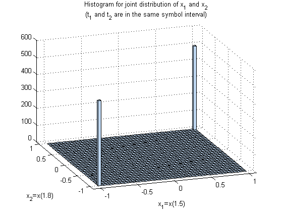
Conclusion: This process is not 2nd order stationary (Also see your lecture notes!)
Example 3: Binary Transmitter with timing offset
The random process x(t) is defined as follows:
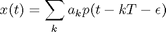
Here $a_k$ is the random variable which is either 1 or -1 with equal probability. Also $a_k$ is independent from $a_l$ when k is not equal l. Hence $a_k$ is i.i.d. Bernoulli distributed.
\epsilon is timing offset and it is uniformly distributed in [0,T)
As usual p(t) is the rectangle pulse of T seconds p(t) = u(t) - u(t-T); (u(t) is the unit step function)
Note that when \epsilon = 0, this example reduces to Example 2.
%To generate this process, we do the following: %Set symbol period and time vector T = 1; % T = 1 sec.(each symbol is transmitted for the duration of 1 sec.) Delta = 1/100; % Delta = Step size for offsets t = 0:Delta:10-Delta; %time runs from 0 to 10 seconds with Delta sec. increments %a total of 10 symbols are transmitted %%Generate a few realizations and show them for k=1:4, aks=round(rand(1,10))*2-1; epsi=floor(T*rand(1)/Delta); %epsilon (offset) is a multiple of Delta! [epsi*Delta aks], %Show epsilon and bits p=ones(1,1/Delta); out = conv(p,upsample(aks,1/Delta)); out=out(1:1/Delta*10); out = out(epsi+1:end); %cut the beginning depending on the offset plot(t(1:length(out)),out), hold all; end; hold off; grid on; axis([0 10 -2 2]) title(['Realizations of the process x(t)' char(10) ... '(Example 3: Binary Transmitter with uniformly distributed timing offset']); xlabel('t (sec.)'); ylabel('Volt'); %The following is the randomly selected epsilon and bits (1 or -1) for 4 realizations:
ans =
Columns 1 through 10
0.4400 -1.0000 1.0000 -1.0000 -1.0000 1.0000 1.0000 1.0000 1.0000 -1.0000
Column 11
1.0000
ans =
Columns 1 through 10
0.4100 -1.0000 1.0000 1.0000 -1.0000 -1.0000 -1.0000 -1.0000 -1.0000 1.0000
Column 11
-1.0000
ans =
Columns 1 through 10
0.1700 -1.0000 1.0000 -1.0000 -1.0000 -1.0000 -1.0000 -1.0000 -1.0000 -1.0000
Column 11
1.0000
ans =
Columns 1 through 10
0.2600 1.0000 -1.0000 1.0000 -1.0000 1.0000 1.0000 1.0000 1.0000 -1.0000
Column 11
1.0000
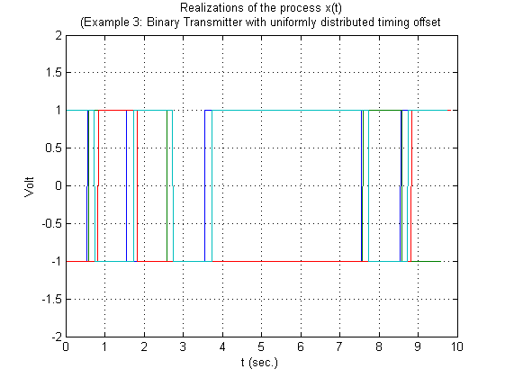 Now let's collect some statistics about this process.
%-------- % First order pdf description %-------- t1 = 2.5; %arbitrarily selected as 0.5 MCnum = 1e3; %Monte Carlo Number xt1=zeros(1,MCnum); for k=1:MCnum, aks=round(rand(1,10))*2-1; epsi=floor(T*rand(1)/Delta); %epsilon (offset) is a multiple of Delta! out = conv(p,upsample(aks,1/Delta)); out=out(1:1/Delta*10); out = out(epsi+1:end); %cut the beginning depending on the offset xt1(k)=out(round(t1/Delta)); end;
%Lets generate the histogram of collected data hist(xt1,100), grid on; %shows the histogram legend('Histogram'); title(['Example 2 : Statistics for x_1 = x(' num2str(t1) ')']); xlabel('x_1');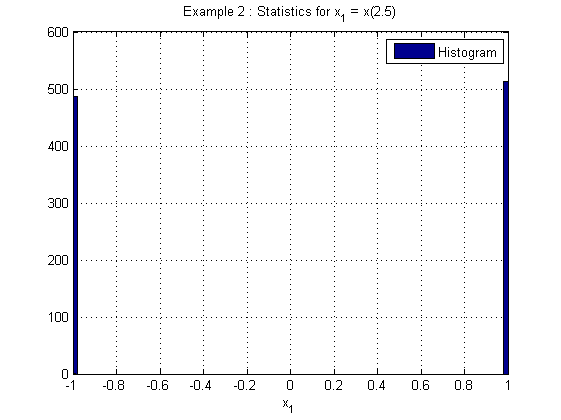
The result is the same as the one of Example 2. (No surprises here.)
%------- % Second order pdf description %------ MCnum=1e3; t1 = 1.9; t2 = 2.2; %Select two time instants xt12=zeros(MCnum,2); for k=1:MCnum, aks=round(rand(1,10))*2-1; epsi=floor(T*rand(1)/Delta); %epsilon (offset) is a multiple of Delta! out = conv(p,upsample(aks,1/Delta)); out=out(1:1/Delta*10); out = out(epsi+1:end); %cut the beginning depending on the offset xt12(k,:)=out(round([t1;t2]/Delta)); end; hist3(xt12,[50 50]); %draw joint histogram view(-19,26); %set view angle xlabel('x_1=x(1.9)'); ylabel('x_2=x(2.2)'); title(['Histogram for joint distribution of x_1 and x_2' char(10) ... '(t_1 and t_2 are NOT in the same symbol interval)'])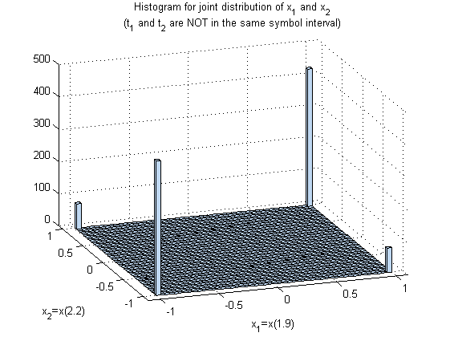
We should observe that the result abobe differs from the one given in Example 2.
%Let's try the other sampling times that we have tested in Example 2. % MCnum=1e3; t1 = 1.5; t2 = 1.8; xt12=zeros(MCnum,2); for k=1:MCnum, aks=round(rand(1,10))*2-1; epsi=floor(T*rand(1)/Delta); %epsilon (offset) is a multiple of Delta! out = conv(p,upsample(aks,1/Delta)); out=out(1:1/Delta*10); out = out(epsi+1:end); %cut the beginning depending on the offset xt12(k,:)=out(round([t1;t2]/Delta)); end; hist3(xt12,[50 50]); %draw joint histogram view(-19,26); %set view angle xlabel('x_1=x(1.5)'); ylabel('x_2=x(1.8)'); title(['Histogram for joint distribution of x_1 and x_2' char(10) ... '(t_1 and t_2 are in the same symbol interval)'])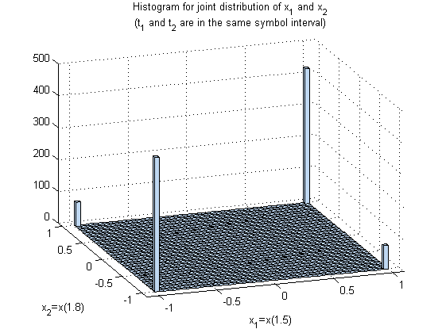
Conclusion: 2nd order pdf's at two different sets of time instants with t2-t1=0.3 are identical.
This is indeed expected. Due to the timing offset, the time origin of the process is lost. In other words, there can be a ``transition" at any time; you can not say that there is so many seconds till the next tranmission with this process. Hence, the depence is broken, the process is stationary in the strict sense!
%------- % Second Momement Statistics : Auto-correlation %------ % %Let's try to estimate the auto-correlation of this process: % MCnum=1e3; t1vec = 1.9:0.1:3.5; t2vec=1.9:0.1:3.5; Rx = zeros(length(t1vec),length(t2vec)); indt1=0; indt2=0; for t1=t1vec, indt1 = indt1 + 1; indt2 = 0; for t2=t2vec, indt2=indt2+1; xt12=zeros(MCnum,2); for k=1:MCnum, aks=round(rand(1,10))*2-1; epsi=floor(T*rand(1)/Delta); %epsilon (offset) is a multiple of Delta! out = conv(p,upsample(aks,1/Delta)); out=out(1:1/Delta*10); out = out(epsi+1:end); %cut the beginning depending on the offset xt12(k,:)=out(round([t1;t2]/Delta)); end; Rx(indt1,indt2) = sum(xt12(:,1).*xt12(:,2))/MCnum; end; end; [X,Y] = meshgrid(t1vec,t2vec); surf(X,Y,Rx); xlabel('t_1'); ylabel('t_2'); title('R_x(t_1,t_2)'); shading interp; colormap('copper'); view(-24,28);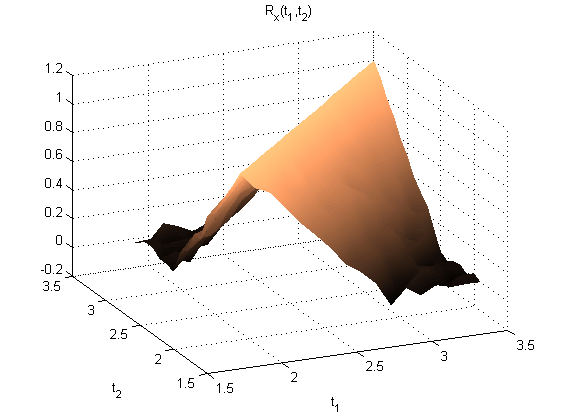
The picture shows the auto-correlation function Rx(t1,t2) for different values of t1 and t2
Can you see that Rx(t1,t2) depends only on the difference of indices, i.e. t1-t2 from this picture ?
Let's view the same picture from a different angle.
[X,Y] = meshgrid(t1vec,t2vec); surf(X,Y,Rx); xlabel('t_1'); ylabel('t_2'); title('R_x(t_1,t_2)'); shading interp; colormap('copper'); view(-45,0);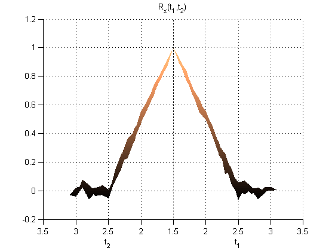
This picture is from a degenerate angle; because of that t1 and t2 axis overlap. (This what you should see if you sit at the same level with ``hill'' in the figure (zero elevation angle) at a large distance.)
The picture looks like the result that we have derived in the lecture. It should be the identical to the result given the lecture if we increase the number of Monte Carlo simulations to infinity.